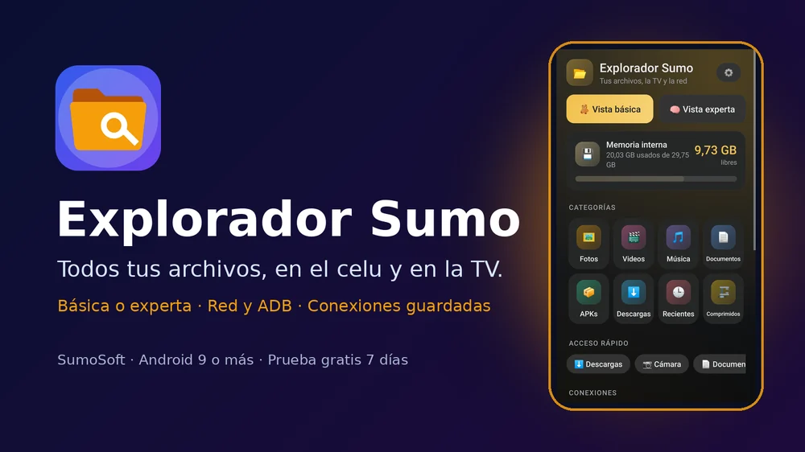
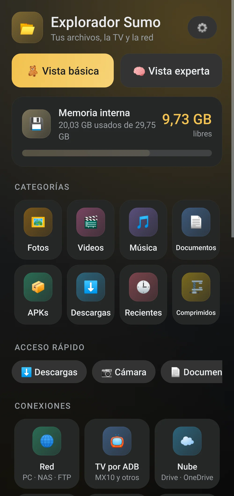
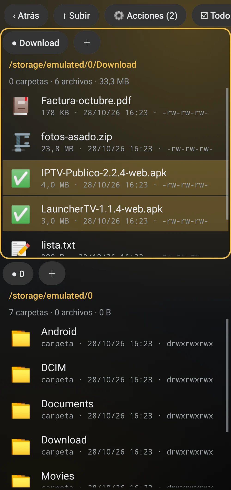
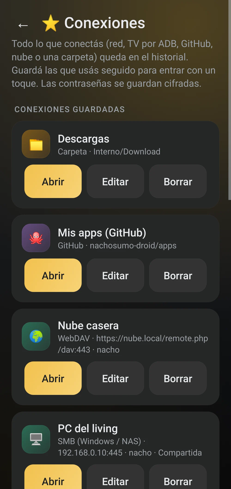
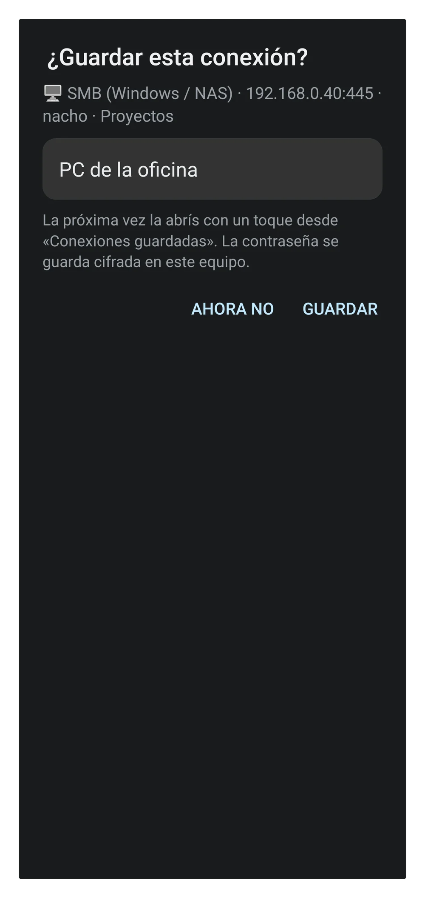
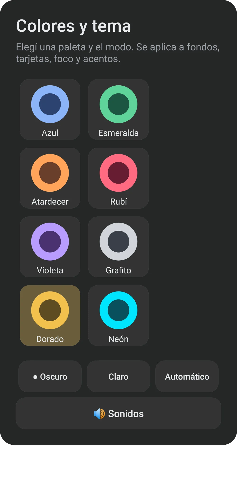
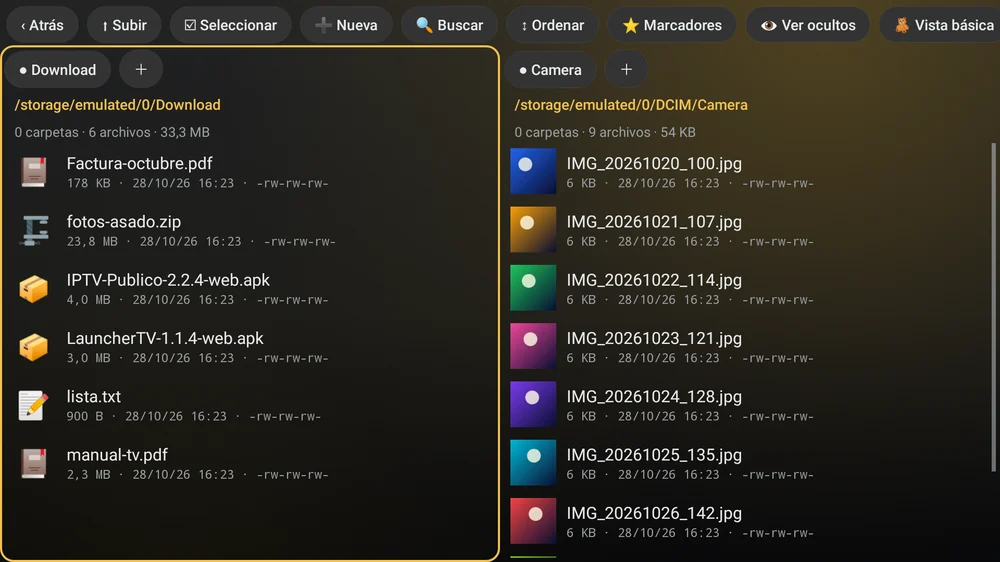
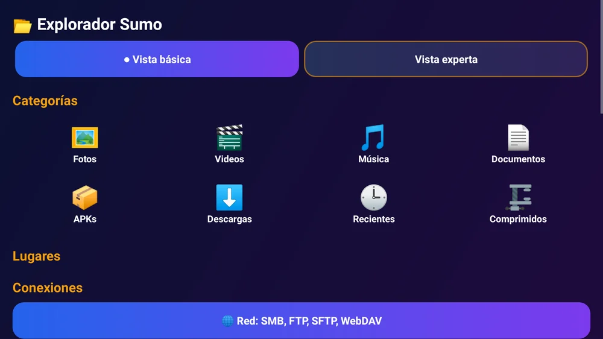
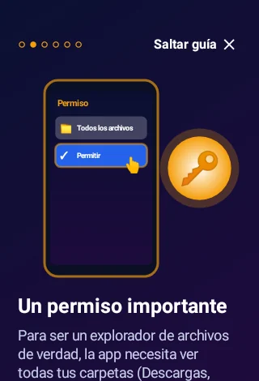
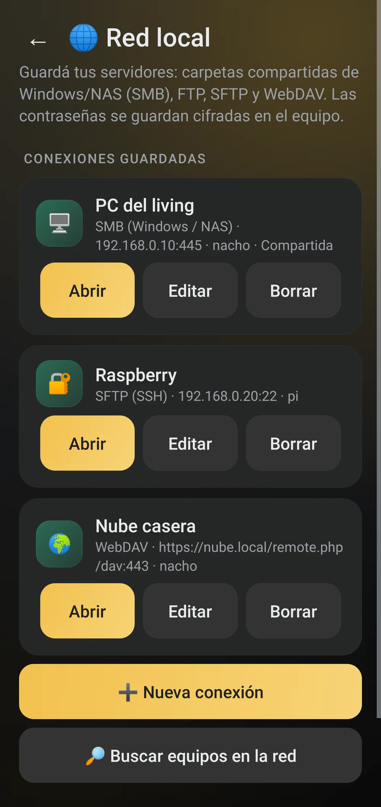

Inicio › Apps › Explorador Sumo
Explorador Sumo
Explorador de archivos completo para celular y TV: vista simple o doble panel, red, ADB, comprimidos, papelera y bóveda cifrada.
Un explorador completo, sin publicidad, que anda igual de bien en el celular y en la TV.
Permisos: para ser un explorador de verdad pide «Acceso a todos los archivos» (Android 11+), y permiso para instalar apps si querés instalar APKs; Play Protect puede avisar al instalarla. Tus archivos no salen del equipo salvo cuando vos los mandás a la PC, la TV, GitHub o la nube. Nube: Drive y OneDrive se conectan con el selector de carpetas de Android (no hay conexión directa con sus servidores todavía) y en muchas TV ese selector no existe; Google Fotos sólo permite traer fotos con el selector del sistema. ADB: mientras la depuración por red esté activada, otros equipos de tu Wi-Fi con permiso pueden controlar la TV; apagala cuando no la uses. FTP y WebDAV sin https viajan sin cifrar. No fue probada todavía en todos los modelos de TV box.
Un solo APK para celulares Android 9 o más nuevos y para Android TV / TV box (control remoto).
Sin publicidad. Nunca.Pagás una vez y la app es tuya: sin banners, sin videos que te hacen esperar, sin interrupciones. Por qué cobramos


Todos tus archivos, en el celu y en la TV

Inicio: espacio, categorías y accesos

Vista experta: doble panel y selección

Conexiones guardadas e historial

¿Guardar esta conexión?

Colores y tema: 8 paletas

En la TV, con el control remoto

Inicio en la TV

Fotos con miniaturas

PC, NAS, SFTP y WebDAVLo que la hace distinta
- 📺 El mismo APK en el celular y en la TV, manejable con el control.
- 🧸 Vista básica para cualquiera, 🧠 vista experta para los que saben.
- 🔌 Instalá APKs en la TV desde el celular por ADB.
- 🖥️ PC, NAS, FTP, SFTP y WebDAV: copiá entre cualquiera de ellos.
- 🗑️ Papelera de 30 días y 🔒 bóveda cifrada.
- ⭐ Conexiones guardadas e historial para volver a entrar con un toque.
- 🚫 Sin publicidad. Nunca.
Qué es
Explorador Sumo es un administrador de archivos para el celular y la TV en una sola app. En la vista básica tenés tus fotos, videos, música, documentos, APKs y descargas con íconos grandes y una barra de espacio; en la vista experta, doble panel con pestañas, ruta completa, archivos ocultos, permisos, búsqueda con filtros, renombrado en lote y hashes. Se conecta a carpetas compartidas de la PC o NAS (SMB), FTP, SFTP y WebDAV, a la TV por ADB para mandar archivos e instalar APKs desde el celular, y comparte por Wi-Fi con un QR. Lo que borrás va a una papelera por 30 días y lo privado lo podés cifrar con contraseña. Se maneja entero con el control remoto.
Qué hace
- Vista básica: Fotos, Videos, Música, Documentos, APKs, Descargas, Recientes y Comprimidos con íconos grandes, más una barra de espacio usado. Copiar, mover, renombrar, borrar y compartir.
- Vista experta: dos paneles con pestañas, ruta completa, ocultos, permisos, tamaño y fecha; multi-selección, ordenar, marcadores, búsqueda con filtros, renombrado en lote y propiedades con MD5, SHA-1 y SHA-256.
- Red: carpetas compartidas de Windows o NAS (SMB 2/3), FTP/FTPS, SFTP y WebDAV, con búsqueda de equipos en tu Wi-Fi. Las contraseñas se guardan cifradas.
- TV por ADB: con la depuración por red activada en la TV, ves sus archivos, mandás y traés archivos e instalás APKs desde el celular.
- Nube: Google Drive, OneDrive, tarjeta SD o pendrive se conectan con el selector de carpetas de Android; las fotos de Google Fotos se traen con el selector del sistema.
- Papelera de 30 días, bóveda cifrada con contraseña, duplicados, archivos grandes, analizador de espacio y respaldo de APK de tus apps.
- Conexiones guardadas: al conectar un servidor, la TV, GitHub, la nube o al marcar una carpeta te pregunta «¿Guardar esta conexión?»; después entrás con un toque desde «Conexiones», con historial de las últimas.
Requisitos
- Celular Android 9 o más nuevo, o Android TV / TV box con Android 9 o más
- Permiso «Acceso a todos los archivos» (Android 11+) o de almacenamiento (Android 9/10)
- Permiso para instalar apps, sólo si querés instalar APKs
- Para ADB: depuración por red activada en la TV
Funciones
- Vista básica con categorías y vista experta de doble panel con pestañas
- Copiar y mover entre el celular, la PC (SMB), FTP, SFTP, WebDAV, la TV (ADB) y carpetas de la nube
- Instalá APKs en la TV desde el celular por ADB, viendo antes paquete, versión y permisos
- Comprimir ZIP, 7z y tar.gz; extraer ZIP, 7z, RAR, TAR, GZ, BZ2 y XZ
- Papelera de 30 días y bóveda cifrada (AES-256) con contraseña
- Búsqueda con filtros, duplicados, archivos grandes y analizador de espacio
- Visor de fotos, video, audio y PDF, y editor de texto con colores para código
- Compartir por Wi-Fi con un QR, sin instalar nada en el otro equipo
- Repos y releases de GitHub: bajar e instalar APKs
- Conexiones guardadas e historial: red, TV, GitHub, nube y carpetas con un toque
- 8 paletas de colores en modo oscuro, claro o automático
- Se maneja con el control remoto en Android TV
Cómo se instala
- Descargá el APK e instalalo (si Android pregunta, permití instalar desde el navegador). Es el mismo APK para el celular y la TV.
- Abrila y en la guía tocá «Dar acceso a archivos»: activá Explorador Sumo en «Acceso a todos los archivos».
- En la TV: pasale el APK desde el celular con «ADB → Instalar en TV» o con un pendrive. Con el control, ☰ abre las acciones.
- Para comprar: «Activar» → «Comprar con Mercado Pago».
Novedades
- 1.0.1 — Arranca en la memoria interna (antes podía quedar en /storage/emulated), diseño de la marca con intro animada y selector de colores, conexiones guardadas e historial.
- 1.0.0 — Primera versión.